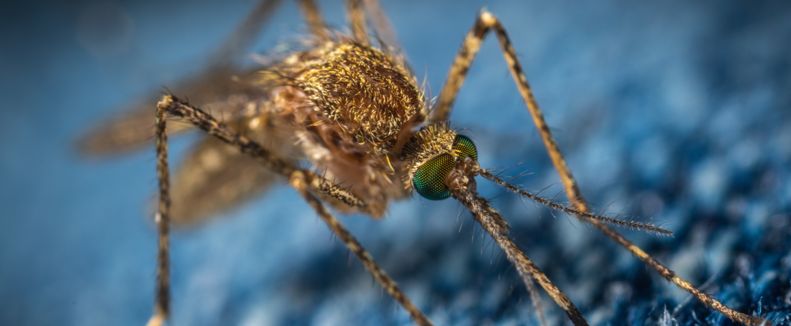

Welcome to my website!
My name is Zhilei Zhao. I'm currently a graduate student in the
McBride Lab at
Princeton University.
I'm interested and trained in the fields of neurobiology and evolutionary biology.
My current research focuses on the intersection of these two fields: neural circuits underlying animal behaviors and evolution of those circuits.
During my PhD, I've been working with my amazing advisor
Prof. Carolyn (Lindy) McBride
on the evolution of olfactory circuits in the yellow fever mosquito Aedes aeygpti.
We want to understand at the neural level why they became preferentially attracted to human odor during evolution, which makes them devastatingly efficient for spreading diseases to humans.
You can find out more about my research on the
Research and Publication page.
